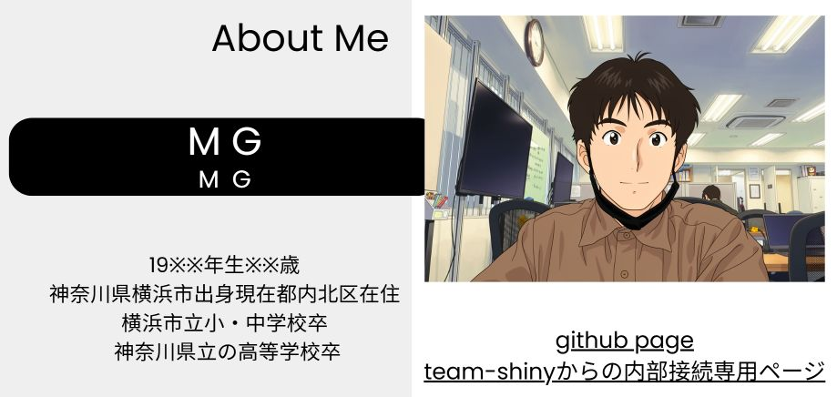
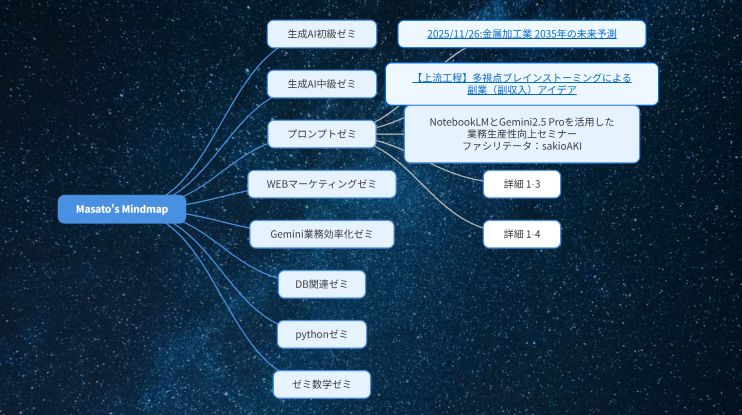

Ｍ．Ｇ のポートフォリオ : team-shinyからの内部接続専用ページ
Canvaで制作したポートフォリオ
プロンプトゼミからの生成物
マインドマップ型内部向けポートフォリオリンク ( D3.js 利用 )
NotebookLMの部屋
一般向けポートフォリオ
team-shiny内部向けポートフォリオ ( D3.js 利用 )
データサイエンス
生成ＡＩ初級・中級ゼミ
pythonゼミ関連
数学ゼミ関連
データベース関連
業務効率化ゼミ【Gemini/GA4/LookerStudio】
google colab 利用
git&githubゼミよりサンプルHP